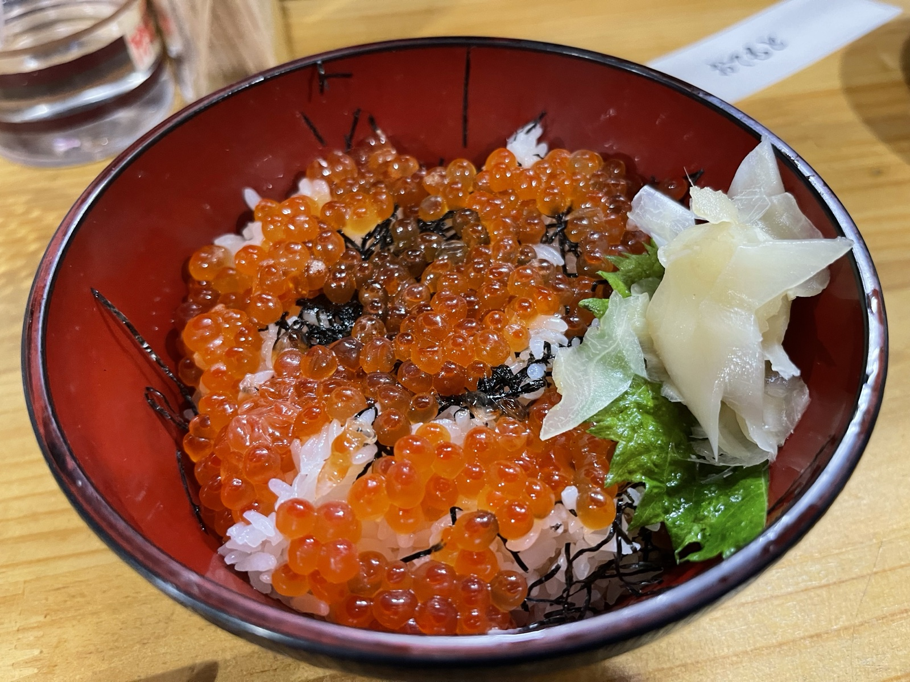
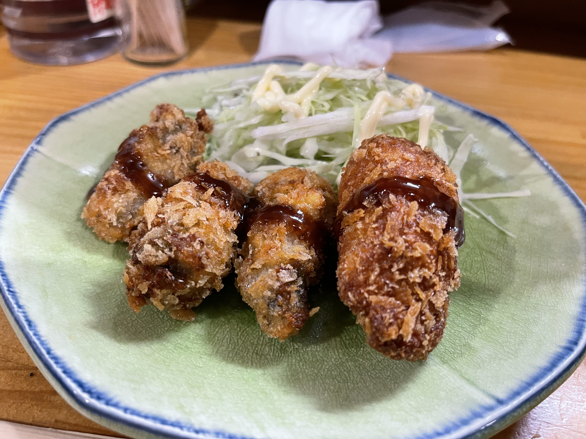

De Wakkanai a Asahikawa: hoy toca bajar todo el día. La ruta es la línea Ororon, la Ruta 232 a lo largo del mar de Japón. Unos 200 km de costa de Wakkanai a Rumoi, una carretera muy querida por los motoristas.
Línea Ororon: solo hacia el sur
Saliendo de Wakkanai empieza la recta costera. Mar de Japón a la izquierda, llanura a la derecha. Apenas hay semáforos y, a la altura de Teshio, la vista se abre hasta el horizonte. La misma emoción que en la SR400, otra vez con la XSR900.
Hoy renuncié a las paradas turísticas y rodé y rodé. La fatiga se acumula; al llegar a Asahikawa, lo único que apetecía era dormir. Está bien. Mañana es el último día.
Noche en Asahikawa — izakaya «Kogorō»
Check-in en un hotel del centro de Asahikawa y a buscar cena por el barrio. Entré en «Kogorō», un izakaya con un cartel de «Kita-no-Tsukuri-dokoro»: ambiente local.



Local con ambiente cálido y cocina sólida. Después de casi una semana rodando, el cansancio se va aflojando en sitios así. Si pasas por Asahikawa, recomendado.
Guía de viaje (información general)
※ Esta sección reúne información pública con notas del autor; consulta tarifas, horarios y estado de las carreteras en los sitios oficiales.
Línea Ororon (Wakkanai → Asahikawa)
- Ruta sur: Carretera prefectural 106 (línea Wakkanai–Teshio) → Ruta 232 (línea Ororon) → Ruta 40 hasta Asahikawa.
- Carretera prefectural 106: Recta sin postes (tramo «la recta más larga de Japón»); paisaje tremendo, pero con viento fuerte: ojo en moto.
- Distancia y tiempo: Wakkanai → Asahikawa, unos 260 km, 6–7 horas con descansos.
- Combustible: Repostar planificadamente en Rumoi, Haboro, Teshio, Horonobe; en la costa hay menos estaciones que en el interior.
Ciudad y comida en Asahikawa
- Ramen de Asahikawa: Sopa doble base salsa de soja (cerdo + pescado); «Hachiya», «Aoba» y «Baikōken» son los tres clásicos.
- Zoológico Asahiyama: Famoso en todo el país por las exhibiciones de comportamiento, a unos 20 min en coche del centro.
- 3-jō Buying-Park: Primera calle peatonal comercial de Japón; de noche, animado distrito de restaurantes.
- Izakaya Kogorō (Kita-no-Tsukuri-dokoro): En Asahikawa, mezcla de clientela local y viajera, buen ambiente.
Consejos para fotografiar la prefectural 106
- Si paras en la carretera para fotos, arrímate al arcén y comprueba el tráfico que viene detrás.
- El viento fuerte zarandea las motos; incluso parado, bloquea la dirección y asegura el caballete.
- Las 8–9 de la mañana y las 16–18 de la tarde dan luz oblicua que aporta volumen.